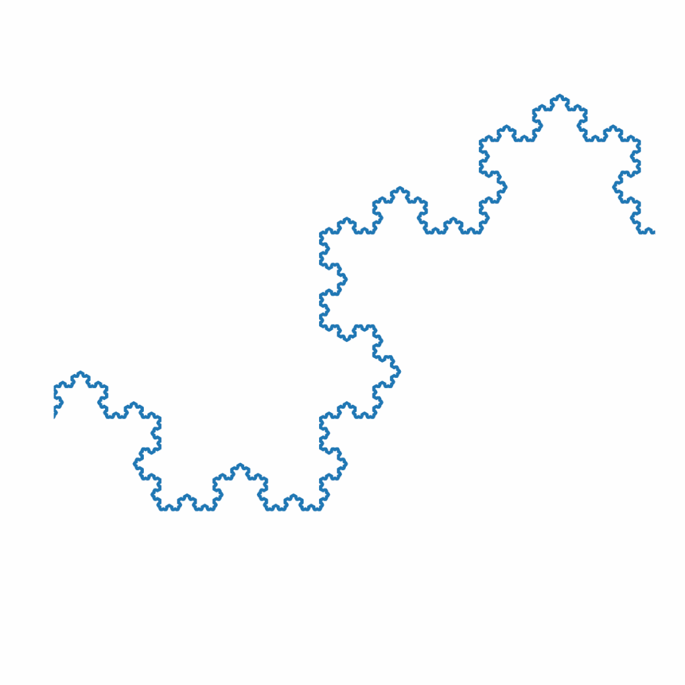
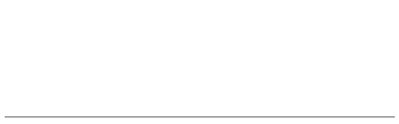
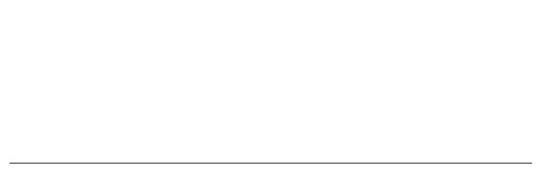
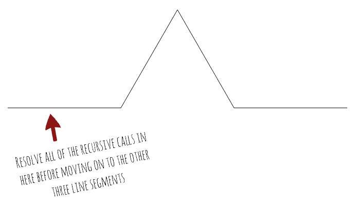
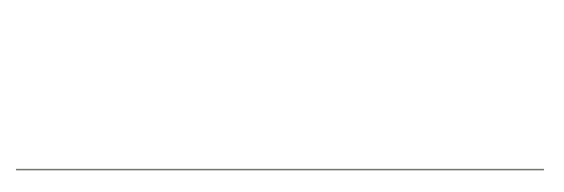

We'll take a look at why we use recursion as a problem-solving technique and will start to see problems that would be very difficult to accomplish without using recursion.
- Readings: Text 8.4
- Lecture quiz on Canvas
Lecture Video
Prezis
Here are the Prezis from today's lecture:
Contents
1. Fractals
2. Regarding the Ordering of Recursive Calls
3. Examples of Fractals in Nature
4. Snowflake Fractal Code
5. Integer Division and Datatype Chemistry
6. Recursive Dice Sequences
7. Faster Dice Rolling with Vector Accumulation and Combinatorial Verification
8. Alternative Approach to Recursive Permutations
9. What's next?
10. Practice Exercises
Fractals
We started today with an introduction to fractals: recurring graphical patterns where smaller instances of the same shape or pattern occur within the pattern itself. These are often referred to as "self-similar patterns." We explored this idea via the Koch snowflake. In your current assignment, you're also exploring the idea of fractals through the Sierpinski triangle.
With respect to snowflake fractals, we started by observing the infinitely recursive pattern in the following image:

Image credit: Juarez Bochi, via Wikipedia. License terms: CC BY-SA 4.0.
We then saw how this snowflake pattern emerges if we do the following:
- start with a straight line
- punch up the segment that runs in the middle 1/3 of that line to form an equilateral triangle
- recursively apply the steps above to the four lines we just created until some desired level is achieved
Here's an image of that in action:

The following animation shows slightly more detail. We see (in parallel) how each recursive call identifies the points 1/3 and 2/3 of the way through each line segment, the calculation of a third point to form an equilateral triangle with those two points, and the resulting split into four new line segments that correspond to the four recursive calls we make for each line (provided we haven't hit a base case):

Regarding the Ordering of Recursive Calls
(Important note!) The animation above shows each level of recursive calls in parallel, which gives a high-level overview of the algorithm, but this parallelism does not mirror how the recursive calls would be made in code. In that animation, we initially see the first call to drawSnowflake() dividing a line into four segment. We then see the results of all four recursive calls at once, followed by the recursion into all 16 of the recursive calls that take place at the next level.
In practice, our recursive function will have to resolve the first of our four recursive calls (and all of that call's recursive calls) before returning to our initial call and moving on to the second of the four large line segments we see in the following image:

The actual order by which they unfold is depicted in the following animation. Notice that after the initial call is divided into four lines, we recurse upon the leftmost of those and go as deeply as possible before moving onto the next:

Examples of Fractals in Nature
(Not mentioned in class.) I totally had some images to show in class of fractals occurring nature, and I totally forgot to bring them up. Fractals appear in mountain ranges, lightning, snowflakes, rivers and their tributaries, succulents, and more. See, for example: Nine Amazing Fractals Found in Nature.
One of the most famous examples of fractals in nature is the Romanesco broccoli:
Image credit: Aurelien Guichard, via Wikipedia. License terms: CC BY-SA 2.0.
These are obviously majestic and awesome. Notice that the buds form a spiral, but if you zoom in on them, each has mini buds that form a similar spiral, and those all have ultra-mini buds that follow the same pattern. The buds form a logarithmic spiral (how cool is that?!), which you can read about on the Wikipedia page for Romanesco broccoli if you're interested.
Snowflake Fractal Code
Following is the code we built to generate the snowflake segments shown above. We also rotated three such segments and united them to create a fully-fledged snowflake.
This code relies on elements of the Stanford graphics libraries in code that I brought pre-written into class. My hope is that you would be able to reproduce the core recursive function here, given the support functions to handle the graphics and trigonometry. You're not responsible for memorizing the graphics library functions, although you're certainly encouraged to tweak the graphics components of the code and explore their behaviors.
#include <iostream>
#include <math.h>
#include "console.h"
#include "gtypes.h"
#include "gwindow.h"
using namespace std;
static const int SCREEN_WIDTH = 800;
static const int SCREEN_HEIGHT = 800;
static const int BASE_Y = SCREEN_HEIGHT - SCREEN_HEIGHT * .35;
static const int BASE_LEFT_X = 170;
static const int BASE_RIGHT_X = SCREEN_WIDTH - 170;
static const double COS_60 = 0.5;
static const double SIN_60 = sqrt(3) * 0.5;
// Returns a GPoint that forms an equilateral triangle with the points passed as
// parameters.
GPoint thirdEquilateralPoint(GPoint bottomLeft, GPoint otherPoint)
{
double deltaX = otherPoint.x - bottomLeft.x;
double deltaY = otherPoint.y - bottomLeft.y;
double x = bottomLeft.x + (deltaX * COS_60 + deltaY * SIN_60);
double y = bottomLeft.y + (deltaY * COS_60 - deltaX * SIN_60);
GPoint tip(x, y);
return tip;
}
// Returns a GPoint that is a fraction of the way from p1 to p2.
GPoint pointBetween(GPoint p1, GPoint p2, double fraction)
{
double x = p1.x + (p2.x - p1.x) * fraction;
double y = p1.y + (p2.y - p1.y) * fraction;
return GPoint(x, y);
}
void drawSnowflake(GWindow& w, int level, GPoint start, GPoint end)
{
if (level == 1)
{
// We used the following at one point to slow down the animation.
// The argument is number of milliseconds to pause the program
// before executing the next instruction.
//pause(2000);
w.drawLine(start, end);
return;
}
GPoint a = pointBetween(start, end, 1.0/3);
GPoint b = pointBetween(start, end, 2.0/3);
GPoint t = thirdEquilateralPoint(a, b);
drawSnowflake(w, level - 1, start, a);
drawSnowflake(w, level - 1, a, t);
drawSnowflake(w, level - 1, t, b);
drawSnowflake(w, level - 1, b, end);
}
int main()
{
// This creates the graphics window.
GWindow w(SCREEN_WIDTH, SCREEN_HEIGHT);
// Determine the bottom-left and bottom-right points for the
// snowflake based on constants defined at the top of the code.
GPoint bottomLeft(BASE_LEFT_X, BASE_Y);
GPoint bottomRight(BASE_RIGHT_X, BASE_Y);
w.setColor("black");
w.setFillColor("black");
drawSnowflake(w, 5, bottomLeft, bottomRight);
return 0;
}
To generate the entire snowflake rather than just a single segment, we relied on our thirdEquilateralPoint() function. Here's the alternative main() to accomplish that:
int main()
{
// This creates the graphics window.
GWindow w(SCREEN_WIDTH, SCREEN_HEIGHT);
// Determine the bottom-left and bottom-right points for the
// snowflake based on constants defined at the top of the code.
GPoint bottomLeft(BASE_LEFT_X, BASE_Y);
GPoint bottomRight(BASE_RIGHT_X, BASE_Y);
w.setColor("black");
w.setFillColor("black");
GPoint top = thirdEquilateralPoint(bottomLeft, bottomRight);
drawSnowflake(w, 7, bottomRight, bottomLeft);
drawSnowflake(w, 7, bottomLeft, top);
drawSnowflake(w, 7, top, bottomRight);
return 0;
}
Integer Division and Datatype Chemistry
When writing the drawSnowflake() function above, I initially did the following:
GPoint a = pointBetween(start, end, 1/3);
GPoint b = pointBetween(start, end, 2/3);
Note that 1/3 would have given us 0 (zero) as a result, and we would have ended up with an uneventful straight line as our output. If you want to get around that, the thing to do is to turn either the numerator or denominator (or both) into a double by adding a .0, like so:
GPoint a = pointBetween(start, end, 1.0/3);
GPoint b = pointBetween(start, end, 2.0/3);
We examined what happens when we mix integers and doubles in arithmetic expressions, and I likened doubles and integers to dominant and recessive genes, respectively:
| Operand A | Operand B | Resulting Data Type |
|---|---|---|
| int | int | int |
| int | double | double |
| double | int | double |
| double | double | double |
In an unrelated analogy, I sometimes refer to this question of what datatype we get when mixing together two specific datatypes as "datatype chemistry."
Recursive Dice Sequences
For this section, see related Prezi at the top of today's notes.
We then returned to the coinFlip() function from last week and saw how we could tweak it to produce sequences of six-sided dice rolls. The key here was to transform the two recursive calls from the coinFlip() function into a series of six recursive calls for our dice.
For your reference, the original coinFlip() code was as follows:
void coinFlip(string soFar, int n)
{
if (n == 0)
{
cout << soFar << endl;
return;
}
coinFlip(soFar + "H", n - 1);
coinFlip(soFar + "T", n - 1);
}
void coinFlip(int n)
{
coinFlip("", n);
}
From that, I produced the following initial draft of a rollD6() function:
void rollD6(string soFar, int n)
{
if (n == 0)
{
cout << soFar << endl;
return;
}
// NOT GREAT
rollD6(soFar + "1", n - 1);
rollD6(soFar + "2", n - 1);
rollD6(soFar + "3", n - 1);
rollD6(soFar + "4", n - 1);
rollD6(soFar + "5", n - 1);
rollD6(soFar + "6", n - 1);
}
void rollD6(int n)
{
rollD6("", n);
}
We cleaned up the code by rolling the recursive calls into a for-loop, which required us to convert the looping integer to a string, resulting in the following:
#include <iostream>
#include "console.h"
#include "strlib.h"
using namespace std;
void rollD6(string soFar, int n)
{
if (n == 0)
{
cout << soFar << endl;
return;
}
for (int i = 1; i <= 6; i++)
{
rollD6(soFar + integerToString(i) + " ", n - 1);
}
}
void rollD6(int n)
{
rollD6("", n);
}
int main()
{
rollD6(4);
return 0;
}
Faster Dice Rolling with Vector Accumulation and Combinatorial Verification
One of the things we observed about the dice roll code above was that printing the results to the screen one-by-one resulted in a slow program where it took a while to watch all the output scroll by.
To improve the runtime, I modified the function to store all results in a vector and then printed that vector just once, after all those results had been computed. With this modification, the results printed practically instantaneously, with no visible delay.
We also printed the vector size to ensure we had the correct number of results, which we determined ahead of time should be 64 = 1296 for rollD6(4).
The resulting code was as follows:
#include <iostream>
#include "console.h"
#include "strlib.h"
#include "vector.h"
using namespace std;
// Be careful to pass the vector by reference!
void rollD6(string soFar, int n, Vector<string>& results)
{
if (n == 0)
{
results.add(soFar);
return;
}
for (int i = 1; i <= 6; i++)
{
rollD6(soFar + integerToString(i) + " ", n - 1, results);
}
}
void rollD6(int n)
{
Vector<string> results;
rollD6("", n, results);
cout << results << endl;
// Expected output if n == 4: 1296.
cout << results.size() << endl;
}
int main()
{
rollD6(4);
return 0;
}
Alternative Approach to Recursive Permutations
For this section, see related Prezi at the top of today's notes.
On Monday, we saw a recursive function for printing all permutations of the characters in an arbitrary string.
At the end of class today, we saw an alternative solution to this problem that some people might find easier to follow. Both Monday's approach and today's approach generate a soFar string that keeps track of the permutation we have built so far on our recursive journey through the function.
However, Monday's approach used an integer parameter to keep track of how far into the permutation we had gotten, whereas today's approach used a second string that kept track of all the characters still remaining to be assigned to the permutation being constructed. The latter approach gives rise to a nice base case (we simply check if that second string is empty) and also frees us from the need to un-swap characters as we return from each function call.
We traced through this approach in the Prezi included above, and our resulting code was as follows:
#include <iostream>
#include "console.h"
using namespace std;
void permute(string soFar, string rest)
{
if (rest == "")
{
cout << soFar << endl;
return;
}
for (int i = 0; i < rest.length(); i++)
{
// Generate a new copy of the "rest" string with the character
// at index i removed.
string newRest = rest.substr(0, i) + rest.substr(i + 1);
permute(soFar + rest[i], newRest);
}
}
void permute(string s)
{
permute("", s);
}
int main()
{
permute("act");
return 0;
}
output:
act
atc
cat
cta
tac
tca
What's next?
On Friday, we'll talk about recursive backtracking, which is a topic that we'll stick with for two lectures -- and which will form the foundation for next week's assignment.
Practice Exercises
1. See if you can reproduce today's printSnowflake() function from scratch using the outline provided below. Then copy and paste it into the complete program provided above in today's notes to see if your solution works as intended.
// Returns a GPoint that forms an equilateral triangle with the points passed as
// parameters.
GPoint thirdEquilateralPoint(GPoint bottomLeft, GPoint otherPoint);
// Returns a GPoint that is a fraction of the way from p1 to p2.
GPoint pointBetween(GPoint p1, GPoint p2, double fraction);
void drawSnowflake(GWindow& w, int level, GPoint start, GPoint end)
{
// To draw a line from p1 to p2, the syntax is:
//
// w.drawLine(p1, p2);
// CODE ME
}
2. (Low-priority exercise.) If time permits, poke around at the const values defined in the snowflake code and see if you can make sense of their impact on the program.
3. Solidify your understanding of recursion by recreating today's rollD6() and permute() functions from scratch.
4. One of the big advantages of today's permute() function compared to the version we wrote on Monday is that the logic is easier to trace through. However, what big downside does this version have compared to Monday's version?
Highlight for solution to #4: Today's approach is much slower than Monday's approach because we're creating so many new strings! Concatenating two strings in C++ is generally an O(k) operation (where k is the length of the new string). The cost of concatenation typically is not a huge cause for concern, but we have an EXPLOSiVE number of calls in this function -- O(n!) of them! When we have that many calls bogging every single one of them down with unnecessary O(k) (or worse) operations can have a noticeable impact on our runtime.
5. One of the annoyances of today's dice rolling function is that there is an invisible space at the end of each line of output that it produces. Without removing the spaces between integers in the program's output (which enhance the output's clarity), how could you prune away all of the invisible end-of-line spaces that are hiding in our output?
6. As always, the textbook and this week's section handout are chock full of great exercises to reinforce this material.